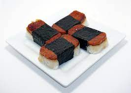

Delicious Spam Musubi recipe
Try this tasty Hawaiian staple with delicious pan-seared Spam atop a bed of lightly seasoned rice, wrapped in seaweed
Ingredients:
- 1 Can of Spam
- 2 cups of rice, dry
- 1 package of seaweed wraps
- Furikake seasoning to taste
Directions:
- Rinse the rice through water until the runoff is clear. May take two to three rinses.
- Put rice and 3 cups water in a pot, bring to a boil
- Once the rice is brought to a boil, drop the temperature to low and cover with a lid
- Simmer rice until water has absorbed completely
- Bring a pan to medium heat on the stove
- Cut the spam into eight slices, sear on both sides until crispy
- Drizzle your favorite teriyaki sauce onto the spam
- Using a musubi press, form rice into desired thickness. 1/2 inch minimum.
- Sprinkle Furikake seasoning onto beds of rice, top with spam
- Cut seaweed into strips to wrap around the middle of the musubi. Use preference to get desired width